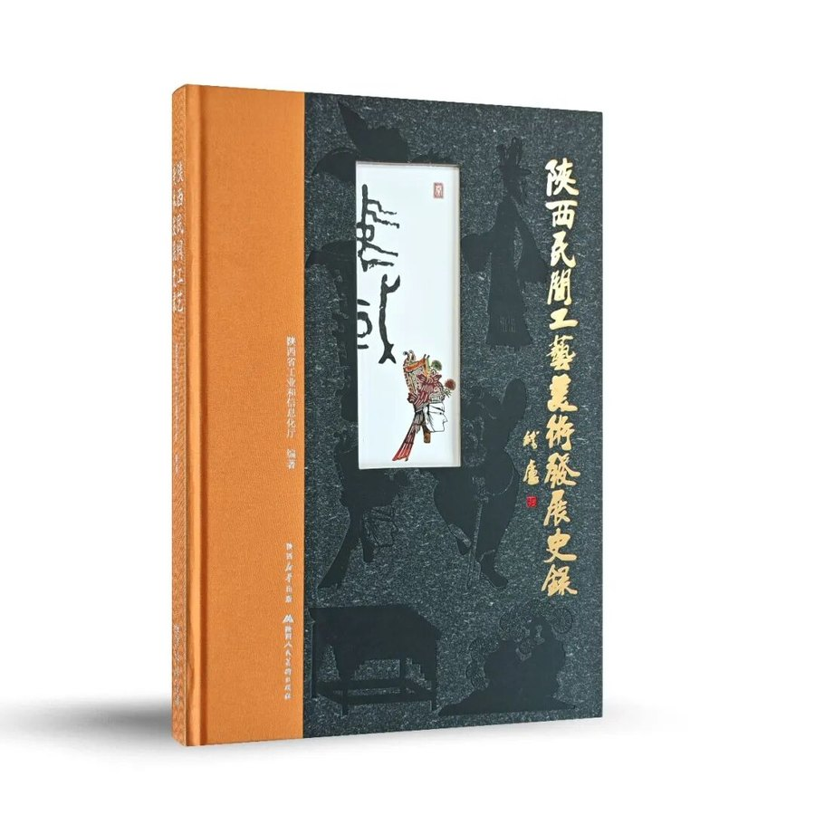
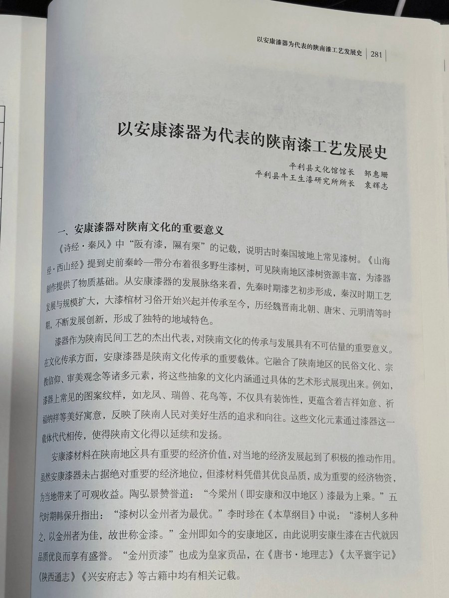
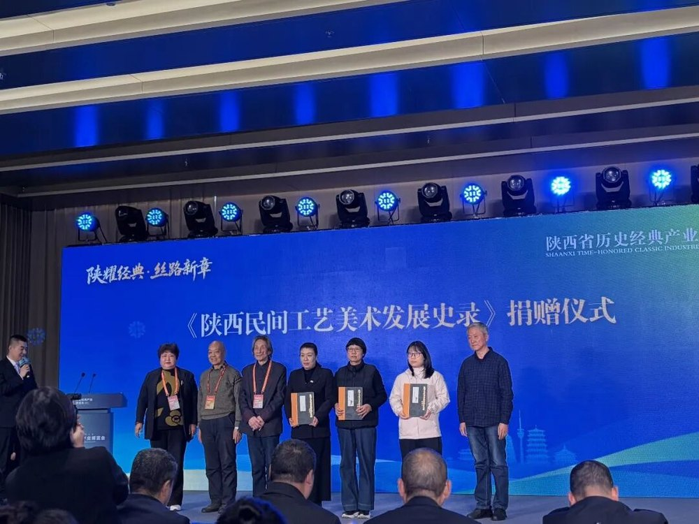

11月21日、陝西省工業和信息化庁が主編する『陝西民間工藝美術發展史錄』が、杭州で開催された第一回歴史経典産業博覧会（11月20〜22日）で正式に発表されました。正大明文化産業集団の伝承者で平利県牛王生漆研究所所長の袁輝志と、平利県文化館館長の鄒惠珊が共著した「以安康漆器為代表的陝南漆工藝發展史」が収録され（281頁）、秦巴髹漆技芸が体系的な史論として陝西民間工芸の公式の記録に書き込まれました。

三秦の手仕事の「家譜」を編む一冊
本書は陝西省工業和信息化庁が主編し、陝西省社会科学院・陝西省民間芸術促進会が共同で編纂、陝西人民美術出版社が刊行しました。三年の歳月と四十余回の田野調査を経て、陝北・関中・陝南の三大地域における木版年画・麦わら絵・馬勺臉譜・切り紙・影絵人形など十余の代表的民間工芸について、発展の脈絡・芸術的特色・現代の伝承状況を体系的に整理しています。収録された二十二篇は漆芸・影絵・写意木彫・切り紙・陶磁・農民画・鳳翔泥塑・刺繍・木版画・青銅工芸・文化財修復・宝飾象嵌など多分野にわたります。
本書は実践者自身の口述と第一手の田野資料を論拠としています。袁輝志の論考は、李継友・汪天穏・史永哲・陳山橋・張樹珉・劉忠陽・楊文宗の各氏による自述・インタビューと並び、本書の「真実性・多様性・活態性・権威性」を支える学術的基盤を形づくっています。なお本書は第36回優秀美術図書「金牛杯」銅賞を受賞しました。

『詩経』から『本草綱目』へ——陝南漆芸の系譜をたどる
収録論考「以安康漆器為代表的陝南漆工藝發展史」は袁輝志と鄒惠珊の共著です。『詩経・秦風』の「阪有漆、隰有栗」、『山海経・西山経』に見える秦嶺一帯の野生漆樹の記述から筆を起こし、先秦における漆芸の形成、秦漢における工芸の発展と規模の拡大、魏晋南北朝・唐宋・元明清を通じた不断の革新という地域的脈絡を整理しています。また安康漆器が陝南の民俗文化・宗教信仰・審美観念を融合させ、龍鳳・瑞獣・花鳥の文様に吉祥如意・祈福納祥の願いを託した、陝南文化の重要な担い手であることを指摘しています。
さらに史料によって安康生漆の品質の源流を裏付けています。陶弘景は「今梁州（現在の安康・漢中一帯）漆最も上乗なり」と称し、五代の韓保昇は「漆樹は金州の者を最優とす」と記し、李時珍は『本草綱目』に「漆樹人多く之を植え、金州の者を佳しと為す、故に世に金漆と称す」と載せています。「金州貢漆」はかつて皇家への貢品となり、『唐書・地理志』『太平寰宇記』『陝西通志』『興安府志』などの古籍にも関連の記載が見られます。金州とは現在の安康——まさに正大明が秦巴に根を下ろし、一本の漆樹から始めた所以です。

技を時間の中に書き留める
1925年に「正大明」商号が「牛王漆」で業を興して以来、正大明は五代にわたり、漆樹を植え、漆を割り、漆を練り、器を成すという全工程の「源」の道を歩んできました。技の来歴を考証し紙頁に定めることは、それを教室へ、産業へと届けることと同じほどに重要です。11月12日に袁端姣が陝西師範大学文学院の第一期無形文化遺産メンターに就任して間もなく、秦巴髹漆技芸は省級の史録に検証可能な記録を残すことになりました。
新書発表会では業界への贈書式も同時に開かれ、『陝西民間工藝美術發展史錄』は杭州師範大学美術学院などに寄贈されました。三秦の手仕事の学びが、デザイン教育と若い研究者の視野へと届いていきます。
